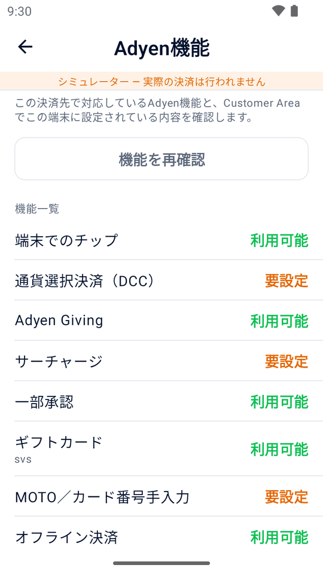
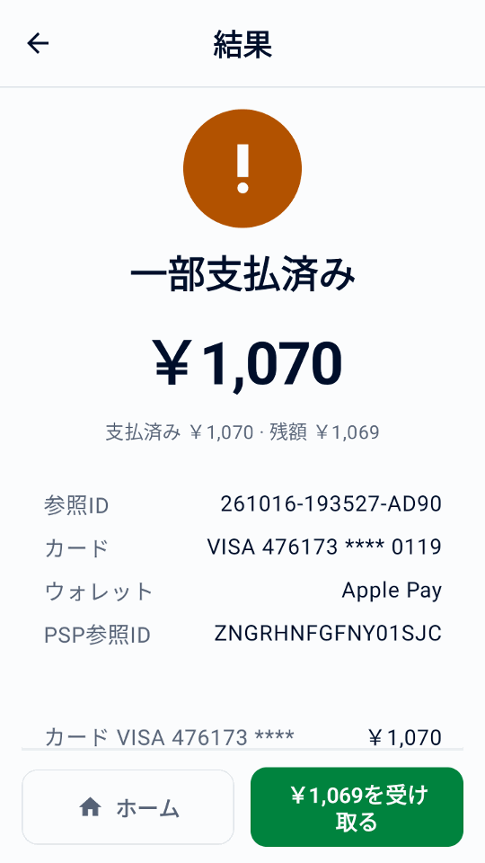
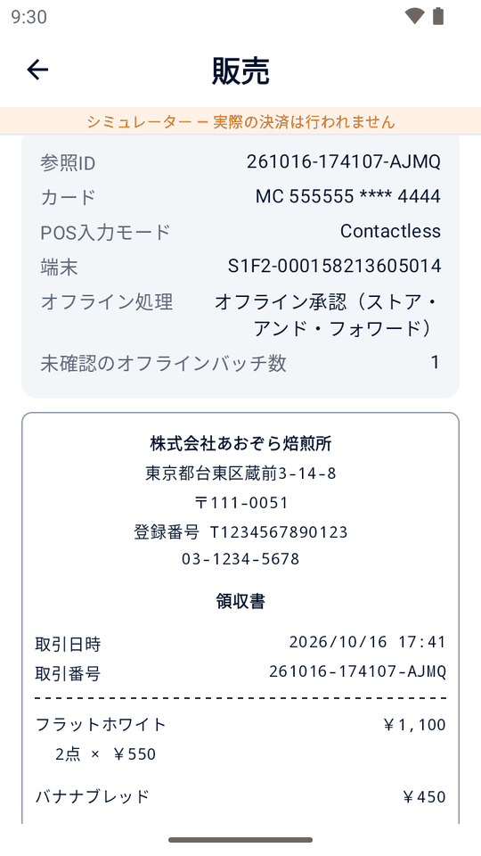
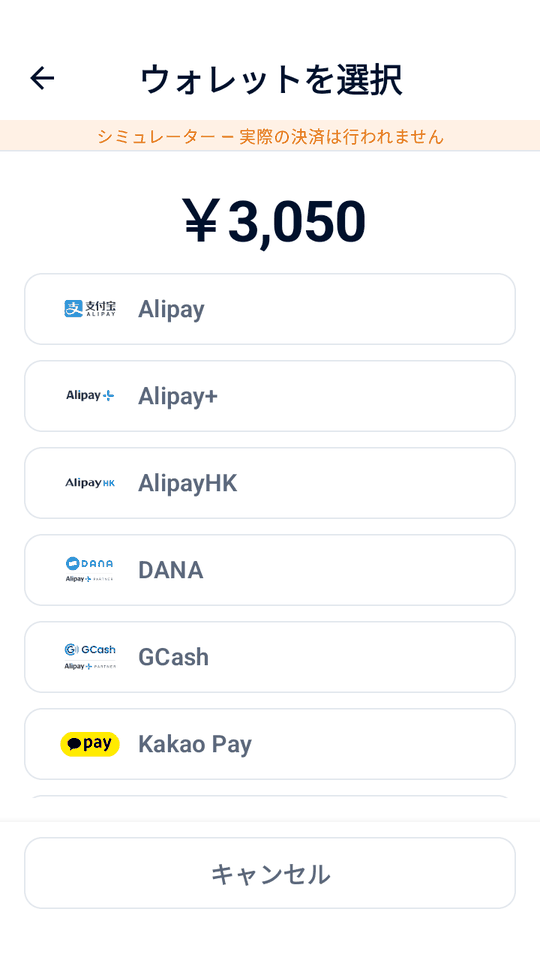
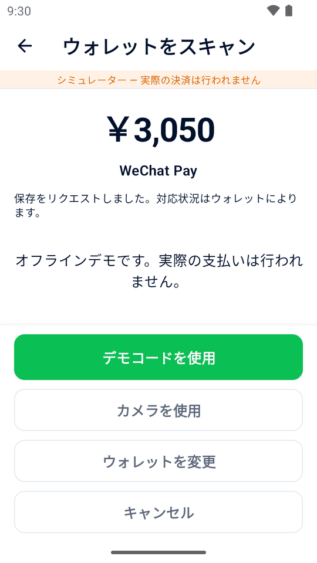
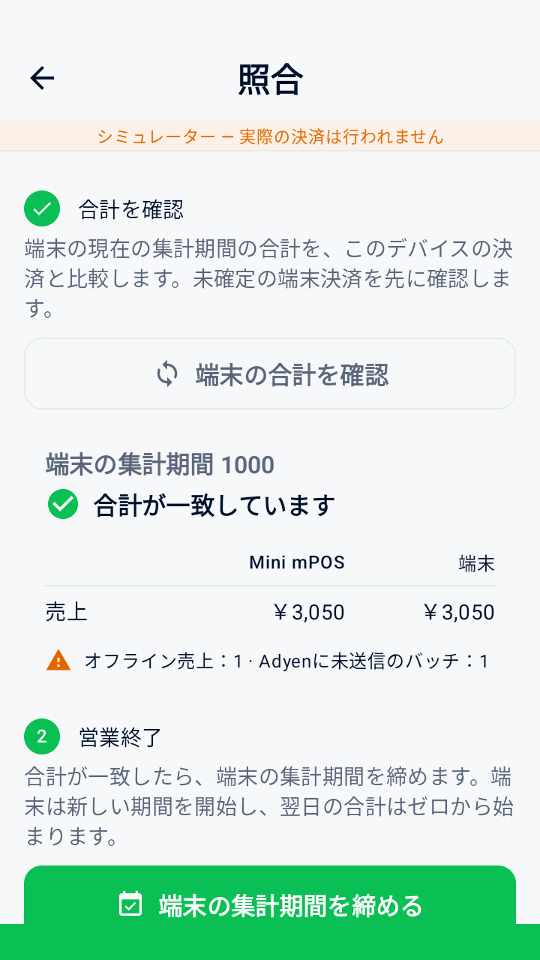
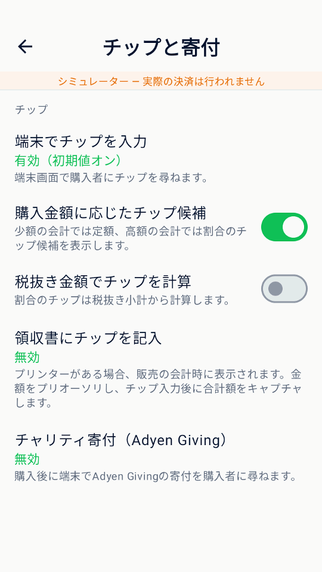

ガイド
Mini mPOS の使い方
日々の業務の手順です。決済、返金、領収書、一日の精算を扱い、任意の業務フローは最後にまとめています。
商品、税、スタッフの権限を準備する
実際の決済を受け付ける前に、Adyen への接続設定を完了してください。決済端末または Adyen Payments アプリが必要です。その後、商品、税、スタッフの権限を一度だけ設定します。
通貨と税を設定する
- 設定 › 決済で、マーチャントアカウントが対面決済で受け付ける通貨を選びます。
- 設定 › 税で、税率、税込価格か会計時に税を加えるか、新商品の初期税率を確認します。
すべての商品に税率があり、非課税の商品には 0% の税率を使います。税を適用をオフにすると税はかかりませんが、税率は保持されます。
重要
通貨を変更しても価格の数値はそのままで、為替レートでは換算されません。変更後に商品価格を確認してください。
商品を追加する
- 商品を開き、+ をタップします。
- 名前、価格、税率を入力します。必要ならカテゴリーとバーコード（入力またはスキャン）を追加します。
- 予約金の商品はプリオーソリ商品をオンにし、プリオーソリだけに表示されるようにします。
スタッフの PIN を設定する
- 設定 › セキュリティでPINを設定をタップします。設定と商品を保護します。再ロックまでの時間を選びます。
- 任意でマネージャーPINを設定をタップします。以後、返金、取消、キャプチャ、金額調整、チップ入力に必要になります。
管理者PINを変更・削除するには管理者PINを変更または管理者PINを削除を使います。削除するとマネージャーPINも削除されます。誤入力を繰り返すと一時的に入力がロックされます。PIN を忘れた場合は PIN の問題を参照してください。
Adyen機能を確認・設定する
決済先に接続したら、設定 › Adyen機能を開きます。各機能が利用可能、要設定、この決済先では非対応のいずれかで表示されます。これは設定の目安であり、マーチャントアカウント、カード、決済方法で実際に取引できる保証ではありません。
- 機能を再確認をタップし、選択した端末の設定を読み取ります。実際の端末の確認には、クイックスタートに記載のManagement APIロールが必要です。
- 対応する端末では、決済通貨の端末チップ、DCC、MOTO、オフライン上限を設定できます。これらの操作はMini mPOSだけでなく、Adyen側の端末設定を変更します。主通貨単位の項目は通貨の基本単位、最小単位の金額はAdyenの通貨精度を使います。
- 設定の決済、チップと寄付、購入者向け端末画面で必要な会計オプションを有効にし、TESTで試します。一覧にはAdyen Giving、一部承認、サーチャージ、ギフトカード、端末集計照合、購入者向け画面も表示されますが、すべてに設定欄があるわけではありません。
Tap to Payでは、端末チップ、購入者向け画面、MOTO/MKE、オフライン決済、端末集計照合などの物理端末向け機能は使えません。一部承認は別の決済オプションです。アカウントでの有効化や決済方法の要件は、Adyenの対面決済ドキュメントを参照してください。シミュレーターで使えても、実端末での対応を証明するものではありません。

カード決済を受け付ける
- ホームで新規販売をタップします。商品をタップするか、バーコードをスキャンをタップするか、任意の商品を追加します。
- 会計ボタンをタップします。商品、税、合計を確認し、参照IDやメール欄を入力します。
- 決済ボタンをタップします。端末（Tap to Pay では Adyen Payments アプリ）が購入者に支払いを案内します。
- 結果を待ちます。結果が表示されるまで次の決済を始めないでください。
- 自動で届けていない場合は、領収書を印刷、領収書をメール送信、領収書を共有で領収書を渡します。
注記
カードは端末が読み取り、Mini mPOS がカードの全情報を受け取ることはありません。端末とマーチャントアカウントに応じて、購入者はカードの挿入やタッチ、スマートフォンや腕時計のタッチで支払えます。非接触（NFC）決済では、端末が確認するまでカードやスマートフォンを非接触マークに近づけたままにします。Tap to Pay では Adyen Payments アプリの案内に従ってください。
警告
結果不明は失敗を意味しません。再請求する前に元の決済を確認してください。
購入者参照ID、カード保存、チップは任意です。参照IDとカード保存を参照してください。購入者自身のスマートフォンで支払う場合は決済リンクを使います。決済が拒否された場合は拒否された決済を参照してください。
任意の会計フローを使う
設定で必要な会計項目だけを有効にします。一部承認を除き、これらの機能には対応する物理端末が必要で、Tap to Payでは使えません。先にAdyen機能を確認し、実際の構成でテストしてください。
一部承認された決済の残額を受け取る
一部承認を許可をオンにすると、要求額より少ないカード承認を受け付けられます。結果が一部支払済みの場合は支払額と残額を確認し、その結果画面で残額を支払うボタンをタップして別のカードで残額を受け取ります。各決済の試行は同じ販売に保存されます。全額が承認されるまでは支払い完了としないでください。
返答がないことは一部承認ではありません。追加の決済前に結果不明の取引を解決してください。承認された分は支払済みなので、元の全額で新しい販売を始めないでください。

購入者向け端末画面を使う
別のネットワーク端末またはクラウド端末を使う場合、設定 › 購入者向け端末画面を開きます。決済前の明細表示、注文確認、会計のメール欄が空の場合のメール入力を選べます。承認後にQRコードを表示したり、0–10の評価を求めたりすることもできます。返された評価は取引詳細に表示されます。
これらの案内には選択したアプリ言語を使い、シミュレーターでも試せます。Mini mPOSが決済端末自体で動いている場合は使えません。表示するQRコードはマーチャント参照IDであり、オンライン領収書のダウンロードではありません。引き続き領収書を印刷、メール送信、または共有してください。
チャリティ寄付を案内する
AdyenとAdyen Givingの利用を手配したら、設定 › チップと寄付でチャリティ寄付（Adyen Giving）を有効にします。販売の会計で選択すると、決済後に端末で寄付を案内します。プリオーソリや領収書のチップ用の確保には使えません。
購入と寄付は別の取引です。報告された寄付額は取引詳細に表示されます。購入が承認されただけでは、寄付の完了は確認できません。
MOTOまたはカード番号手入力で決済する
- 必要な入力方法を端末とアカウントで利用できるかAdyenに確認します。必要ならAdyen機能でMOTOを設定し、スタッフのPINを設定します。
- 設定 › 決済でMOTOまたはカード番号手入力を有効にします。会計で、遠隔注文には郵送・電話注文（MOTO）、ICチップや非接触の読み取りに失敗した場合には手入力決済（MKE）を選びます。同時には選べません。
- 支払うをタップし、不正利用とチャージバックの責任に関する警告を確認します。求められたらマネージャーの承認を行います。カード情報は端末に入力し、Mini mPOSには入力しないでください。
カード番号手入力では、加盟店の不正利用とチャージバックの責任リスクが高くなります。アプリのスイッチをオンにしても、Adyen側のサービス有効化やリスクの解消にはなりません。
オフライン決済と未確認バッチを確認する
オフラインEMVとストア・アンド・フォワード（Store-and-Forward）は、ローカル接続の対応端末で使います。Mini mPOSをその端末で動かすか、同じネットワーク上の端末に接続します。クラウド経由やTap to Payでは使えません。Adyenとオフライン処理を手配し、リスクを確認してからAdyen機能で上限を設定してください。Mini mPOS自体は決済をキューに保存せず、ローカルネットワーク障害時に端末への接続を復旧するものでもありません。
取引履歴では、端末が報告したオフライン販売に印が付きます。販売を開くと、オフライン処理の方式（オフラインEMVまたはストア・アンド・フォワード）と、端末が報告した未確認のオフラインバッチ数を確認できます。オフライン承認ではPSP参照IDがまだない場合があります。これは結果不明ではありませんが、Adyenが受信・精算したことの確認でもありません。
端末とAdyenの接続を復旧し、Customer Areaでアップロードされた決済と最終結果を確認します。端末集計照合でもオフラインと未確認バッチの警告を確認してください。合計の一致はオフライン決済の精算完了ではありません。確定的な返答がない場合は、オフライン承認と決めつけたり再請求したりせず、結果不明の復旧手順に従ってください。

購入者のウォレットコードをスキャンする
販売の会計でウォレットをスキャンを使い、購入者のウォレットアプリの支払いコードを読み取ります。商品バーコードや返金用領収書のスキャンとは別です。物理決済端末が必要で、Tap to Pay では使えません。ウォレット照会には読み取り権限が必要です。
- 合計と会計欄を確認し、ウォレットをスキャンをタップします。領収書でのチップが選択されている場合は、それを使わず支払うことを確認します。ウォレットは合計を直ちに請求し、プリオーソリは行いません。
- 購入者のウォレットを選びます。1 種類だけなら自動選択します。個別に設定されたものだけが表示され、Alipay+ の設定から GCash、DANA、Kakao Pay、TrueMoney の個別開通を推測しません。
- 内蔵スキャナーを確認できた端末では、その端末のスキャンボタンを押します。Mini mPOS のデバイスではなく、ネットワークやクラウドの決済端末の場合もあります。デバイスのカメラを使うにはカメラを使用をタップします。
- 購入者の支払い QR コードまたは支払いバーコードをスキャンします。有効な 1 回のスキャンで直ちに決済が始まります。通常の結果を待ち、領収書を渡します。
キャンセルしてもカートと会計欄は残ります。無効なコードでは支払いません。再スキャンするかウォレットを変更してください。内蔵スキャンは最大 30 秒で終了し、その後は再スキャンまたはカメラを使えます。アプリを離れるとスキャンを停止し、戻ったら明示的な再開が必要です。コードの手入力や貼り付けはできません。
購入者参照IDと同意がある場合、カードを保存で支払い情報の保存を試みます。対応状況はウォレットによります。保存用トークンが返った場合だけ保存成功とし、トークンなしでも承認済みの決済は承認済みです。照会や決済の問題を参照し、結果不明の決済を再スキャンで置き換えないでください。
Adyen のウォレットガイドと Adyen の PayPal と Venmo ガイドで開通状況と TEST 動作を確認してください。


ウォレットスキャンの日本語シミュレーターデモです。
決済を返金・取消する
- 返金
- 請求済みの決済が対象です。全額または一部を返します。
- 取消
- キャプチャ前の確保中の決済が対象です。予約金はプリオーソリをキャンセル、チップ入力待ちの販売は決済をキャンセルをタップします。確保が解除されます。
返金の手順：
- ホームで返金をタップして領収書の返金用 QR コードをスキャンするか、取引履歴で元の販売を開きます。
- 全額、指定金額、商品単位のいずれかを選びます。商品単位の返金には、このデバイスに元の販売が必要です。
- 返金を確定し、求められたらマネージャーPINを入力します。
返金は必ず元の決済に紐づきます。元の決済がない返金には対応しません。支払済みの決済リンクは Customer Area で返金します。
重要
返金要求済みは Adyen がリクエストを受け取ったという意味で、購入者への入金完了ではありません。最終結果は Customer Area で確認してください。返金の結果が不明な場合は、再試行の前に確認してください。
領収書を印刷、メール送信、共有する
決済結果や取引履歴の項目で領収書を印刷または領収書をメール送信をタップします。タブレットやスマートフォンでは領収書を共有で、Android の共有メニューから画像を送れます。印刷にはプリンター付きの端末が必要です。
領収書をカスタマイズしてテストする
- 設定 › 領収書で店舗情報、ヘッダー、フッターを入力します。またはAdyenから店舗情報をインポートをタップし、Adyen の店舗情報で空欄を埋めます。
- 決済後に自動印刷、加盟店控えを印刷する条件、返金用QRコードを表示するかを選びます。
- テスト領収書を印刷をタップして印字を確認します。画面のプレビューはプリンターの正確なレイアウトを示しません。
そのほかの設定：
- 税額を表示
- 合計に含まれる税額、または加算する税額を表示します。課税額は変わりません。
- 税率別の内訳を表示
- 税率ごとの税額を表示します。税込価格で含まれる税額を表示するには必要です。
- 税率別の対象金額を表示
- 0% を含め、税率ごとに商品の合計を表示します。
- 参照IDを表示
- 初期設定でオンです。加盟店参照IDと入力済みの購入者参照IDを印刷し、領収書を決済と照合できるようにします。
- 印を付ける税率（%）
- その税率の商品に商品の印と説明を付けます。空欄なら印を付けません。
- 1行の文字幅
- 細い領収書ロール向けに初期値は 32 です。テスト印刷でプリンターに合う幅を選んでください。
言語を設定する
英語、簡体字中国語、繁体字中国語、日本語に対応しています。設定 › 言語でこのデバイスのアプリの言語を選びます。アプリの表示とアプリが生成する領収書のラベルはすぐに変わります。保存済みの店舗の文言、商品名、通貨、税の設定は変わりません。デバイスに従うは Android 12 以前ではデバイスの言語、Android 13 以降では Android のアプリごとの言語設定を使います。Adyen のカード領収書の行は端末自体の領収書言語に従います。
領収書のメール送信を設定する
- 設定 › 領収書のメール送信を開きます。プロバイダーを選ぶか、SMTP サーバー、ポート、差出人、ログイン情報を入力します。STARTTLS または SSL/TLS を使います。
- テストメールを送ります。
- 同じ画面で、購入者のメールを尋ねるタイミングと自動送信の有無を選びます。
SMTP の許可と正しいパスワードについては各社の説明に従ってください。
領収書を印刷・送信できない場合はプリンターとメールの問題を参照してください。
決済を探し、一日の精算をする
取引履歴は決済と返金を日別に表示し、日計も表示します。
- 販売、チップ入力待ち、プリオーソリ、返金、要確認で絞り込み、カードブランドやウォレットは決済方法で選びます。
- 参照ID、承認コード、購入者参照IDやメール、カード下4桁、ブランド、ウォレット、正確な金額で検索できます。すべての語が一致する必要があり、
visa 34は 34 の Visa 決済を探します。
画面の合計は検索とフィルターに従います。予約金や領収書のチップなど確保中の決済は、キャプチャが受理された日に売上として計上されます。
一日の精算をする
- 取引履歴を開いて要確認で絞り込み、各項目を解決します。結果が不明な場合を参照してください。
- チップ入力待ちとプリオーソリのフィルターを確認します。チップを入力し、確保の期限前に予約金をキャプチャまたはキャンセルします。
- 日付の横の印刷アイコンをタップし、ローカル日次集計を印刷します。
- Customer Area の Adyen レポートと照合します。Adyen の精算照合ガイドを参照してください。
集計はフィルターを無視して一日全体を対象にし、売上、含まれるチップ、受理済みの返金、差引額、新規確保額、未解決の操作を通貨別に示します。TEST とシミュレーターの活動は明記されます。支払済みの決済リンクと日付のわからないキャプチャは、日付不明の活動として別に表示されます。
重要
ローカル日次集計の対象は、このデバイスに保持された決済だけです。Adyen の最終的な精算（キャプチャ）ではなく、他のデバイスも含みません。Customer Area の情報が正となります。
警告
LIVE、TEST、シミュレーターを切り替えると、このデバイスのすべての決済履歴とレポートデータが完全に削除されます。未完了の決済がある場合は、もう一度警告が表示されます。Adyen 側では何も取り消されませんが、ローカルの復旧と安全な再試行データは失われます。商品と設定は残ります。
端末の合計と照合し、期間を締める
- ホームで照合をタップし、端末と集計を照合をタップします。Mini mPOSは、合計を要求する前に処理中や結果不明の端末取引の確認を試みます。本日のレポートを印刷でローカル日次集計を印刷します。
- 通貨ごとの販売と返金を比較し、未解決取引、オフライン販売、未確認バッチを確認します。端末の集計期間は暦日とは限りません。同じ端末を別のデバイスから使った場合やローカル履歴が不足する場合は差異が生じます。決済リンクとサンプル履歴は端末決済ではありません。
- 準備ができたら集計期間を締めるをタップし、必要ならマネージャーの承認を行います。これはレポートの印刷だけでなく、端末に集計期間の終了を要求します。
物理端末とシミュレーターで使えますが、Tap to Payでは使えません。照合の一致や期間終了は、精算、返金完了、オフライン決済のアップロードを確認するものではありません。最終的な金銭処理は引き続きCustomer Areaで確認してください。

参照IDを使い、カードを保存する
- 加盟店参照ID
- 予約番号や注文番号を記録するには、設定 › 決済 › 加盟店参照IDの入力を求めるをオンにします。この番号は Adyen で決済を識別します。空欄なら一意の参照IDを生成します。
- 購入者参照ID
- 設定 › 決済で購入者参照IDを、会計で入力する購入者参照ID（初期設定）、購入者のメール、なしから選びます。すべての決済とともに Adyen に送信します。メールの参照IDは初期設定でハッシュ化されます。すべてのデバイスで同じソルトを使ってください。
- カード保存
- 購入者参照IDを設定したうえでカード保存の選択肢を表示をオンにし、Adyen の設定に合った継続課金モデルを選びます。次回の決済用にカードを保存を選ぶ前に購入者の同意を得てください。後で請求するには保存カードに請求を参照してください。
保存カードに請求
- ホームで保存カードに請求をタップし、求められた場合はマネージャーPINを入力します。
- 購入者参照ID（またはそれに使うメールアドレス）を入力し、保存カードを検索をタップします。
- カードを選び、商品または任意の商品を追加します。このカートは新規販売のカートとは別です。
- 請求内容を確認し、請求をタップします。
購入者は不在のため、事前に同意を得てください。別の継続課金モデル用に保存されたカードは選択できません。これらの決済は取引履歴から返金します。領収書に返金用QRコードはありません。請求結果が不明な場合は7日以内に取引履歴から確認し、それ以降はCustomer Areaで確認してください。
リンクで支払ってもらう
前提条件
- LIVE で使う前に、マーチャントアカウントが利用規約を含む Adyen Pay by Link の要件を満たしていること
- 販売の会計で決済リンクを作成をタップします。
- QR コードを見せるか、リンクをメール送信、リンクを印刷、またはタブレットやスマートフォンでリンクを共有をタップします。
- リンク画面を開いたままにして入金を確認するか、後で取引履歴の項目で支払いを確認をタップします。
- リンクが不要になったらリンクを取り消すをタップします。
リンクが支払われる、期限切れになる、または取り消されるまで、項目には支払い待ちと表示されます。リンクの有効時間は設定 › 決済 › 決済リンクで設定します。リンクは販売専用で、予約金や領収書のチップには使えません。
シミュレーターのリンクは API 認証情報なしでオフラインで試せます。QR コードで支払いはできません。支払いをシミュレートをタップしてデモを完了します。マネージャー承認を設定している場合は承認が必要です。画面と送信した領収書には引き続きデモと表示され、お金は動きません。
重要
有効期間中は、実際のリンクを持つ人なら誰でも支払えます。支払済みリンクの返金はCustomer Area › Payments › Payment listで行います。アプリからは返金できません。
リンクが表示されない、更新されない場合は決済リンクの問題を参照してください。
予約金を確保し、回収する
前提条件
- Adyen サポートが決済方法のプリオーソリゼーションを有効化済み。Adyen のプリオーソリゼーションガイドを参照してください
プリオーソリゼーションはカードに金額を確保し、すぐには請求しません。アカウント全体を手動キャプチャにする必要はなく、Mini mPOS はこの決済だけに手動キャプチャを指定します。
- ホームで新規プリオーソリをタップします。プリオーソリ商品を選ぶか、バーコードをスキャンするか、金額を入力します。1 件につき 1 商品です。
- 会計でプリオーソリのボタンをタップします。領収書に確保額が表示されます。
- 準備ができたら取引履歴で項目を開き、操作を選びます。
- キャプチャ
- 必要な金額を回収します。少ない金額なら残りを解除し、多い金額なら先にカード発行会社に確保額の増額を求めます。キャプチャを要求した後は返金できます。
- 金額を調整
- 請求せずに確保額を変更します。同じ金額を送るとオーソリゼーションを更新します。
- プリオーソリをキャンセル
- 確保を解除します。Customer Area でキャプチャ済みの場合は、Adyen が代わりに全額を返金します。
キャプチャ要求済みは最終確認ではありません。Customer Area で確認してください。金額調整の結果をすぐに受け取るには、Adyen のオーソリゼーション調整ガイドに従い Return adjust authorisation data を有効にします。
警告
確保には期限があります。プリオーソリのフィルターを毎日確認し、速やかにキャプチャまたはキャンセルしてください。失敗や結果不明の操作はキャプチャの問題を参照してください。
端末でチップを受け取る
- Adyen機能で端末チップを確認します。必要に応じて、決済通貨の定義済みチップと自由入力の選択肢を設定します。
- 設定 › チップと寄付で端末でチップを入力を有効にし、会計での初期状態を選びます。必要なら購入金額に応じたチップ候補で少額の会計には定額、高額の会計には割合を提示するか、税抜き金額に対して割合チップを計算を有効にします。
- 販売の会計で端末でチップを入力を選び、支払うをタップします。購入者はカードへの請求前にチップを選びます。返された合計とチップを確認し、領収書を渡します。
プリンターも後からのチップ入力も不要です。端末チップと領収書のチップは同時に選べません。どちらもプリオーソリ、スキャンするウォレット決済、決済リンクには使えません。Tap to Payでは端末チップを使えません。

領収書に書かれたチップを回収する
前提条件
- プリンター付きの端末
- Adyen サポートがプリオーソリゼーションと overcapture を有効化済み。Adyen の領収書チップガイドを参照してください
設定 › チップと寄付で有効（初期値オフ）か有効（初期値オン）を選び、会計のスイッチの初期状態を決めます。初期設定の無効ではスイッチを表示しません。一部のデビットカードやウォレットはこのフローに対応していません。
- 販売の会計で領収書にチップを記入をオンにし、決済ボタンをタップします。代金は確保され、請求されません。
- 領収書を印刷します。チップと合計の空欄があり、加盟店控えには署名欄があります。
- 購入者が記入したら、結果画面か取引履歴のチップ入力待ちでチップを入力をタップします。
- チップまたは合計を入力するかチップなしをタップし、確定します。
アプリは代金とチップの合計をキャプチャします。20% を超えるチップでは、先にカード発行会社による確保額の増額が必要です。拒否された場合は、少ないチップかゼロを入力してください。保存したチップは変更できません。チップ入力前は返金ではなく決済をキャンセルし、入力後の返金にはチップが含まれます。
警告
ゼロも含め、チップは速やかに入力し、確保の期限前にキャプチャしてください。キャプチャの失敗や結果不明はキャプチャの問題を参照してください。
追加のデバイスを設定し、データを管理する
- 設定済みのデバイスで設定 › データと転送 › 別のデバイスに共有を開きます。カタログ、設定、パスワードとキーから選び、QRコードを表示をタップします。
- 新しいデバイスで別のデバイスから設定を選び、すべてのコードを任意の順で読み取ります。カタログを統合するか置き換えるかを選びます。
- 最初のデバイスに表示された 12 文字の転送コードを入力します。商品や設定だけをコピーする場合も必要です。QR コードとは別に保管してください。インポートをタップします。
- 価格と税を確認し、設定 › 端末で接続をテストして、テスト領収書を印刷します。
新しいデバイスは、自身の決済先、端末、環境、Tap to Pay の登録を保持します。共有キーを別の端末で使えるのは、Adyen がその端末に同じキーを割り当てている場合だけです。
重要
これは一度きりのコピーで、同期や決済履歴のバックアップではありません。各デバイスがそれぞれの決済を保持します。Android でアプリのデータを消去すると、デバイスのすべての商品、設定、履歴が削除されます。
設定 › データと転送で取引の保存期間を設定するか、完了した履歴を消去をタップします。未解決の決済は常に残ります。
タブレットやスマートフォンでは、起動時に新しいバージョンを確認します。ホームに更新が表示されたら、タップしてブラウザーで APK を開き、ダウンロードしたファイルをインストールします。Adyen 端末はこの通知ではなく Customer Area から更新します。最新リリースを入手し、インストール手順に従うこともできます。同じ署名元を使い、既存のアプリに上書きしてください。アンインストールやデータの消去はしないでください。
取り込みの問題は PIN と転送の問題を参照してください。